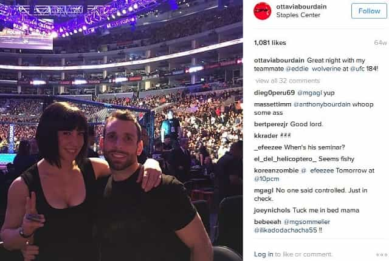
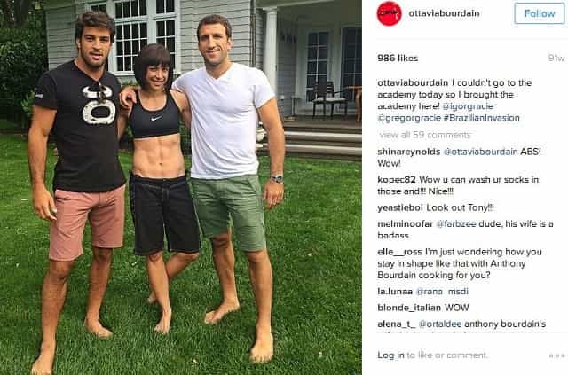
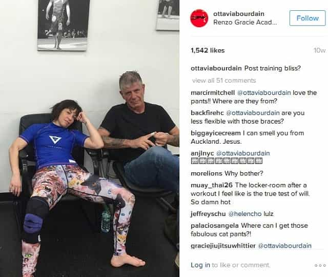
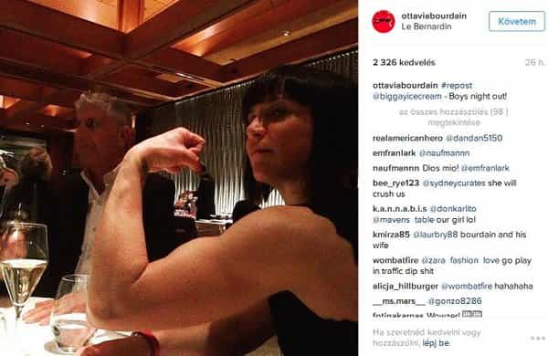
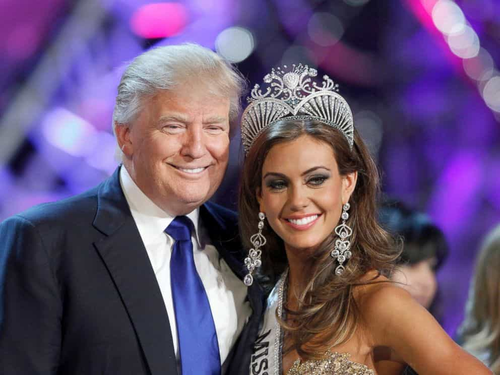
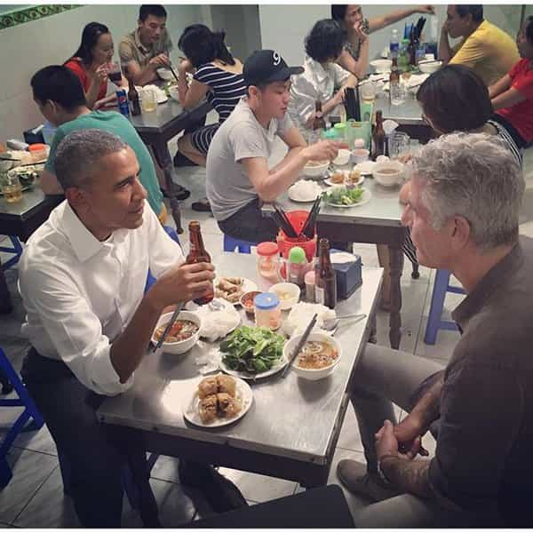

< < < Back
Is Anthony Bourdain Getting Cucked By His MMA Wife? – Return Of Kings
Anthony Bourdain has emerged as one of the preeminent celebrity critics of Donald Trump. The vitriol he unleashed last year against The Donald over the latter’s illegal immigration stances was particularly vocal. It is possible, however, that a big part of Bourdain’s beef with the Republican Presidential nominee has to do with the television chef’s jealousy over Trump’s continuing assertion of his masculinity. After all, Bourdain’s current wife Ottavia, who is considerably younger, has a special talent for posing very cosily with other younger, more muscular and almost certainly much more virile men.

Wife of Anthony Bourdain with MMA colleague
Ottavia, an aspiring MMA fighter, has benefited immensely from her marriage to Bourdain. A New York Times profile on her from several years ago makes it clear, even if the writer tries to deny it, that the Italian-born brunette owes pretty much all she has to her much older spouse. She came to America with basically zero money and zero English to follow a rock musician she was “in love with” (bad boy syndrome?) and, after a lot of time in menial restaurant jobs, eventually met and married the fabulously wealthy Bourdain. Whilst Melania Trump has also garnered a huge number of benefits from marrying The Donald, the third Mrs. Trump does not exactly do everything she can to embrace other men constantly in her social media pictures.
Whether Ottavia is actually cheating is yet to be proven. What can be said beyond a shadow of a doubt, though, is that her social media antics are of the kind that would drive a woman to the depths of anger and horror if her husband were posing with younger girls like Ottavia does with younger men. Considering that many of the men she poses with are not only significantly stronger but much more experienced in MMA than her, many of the up-and-close social media shots are flagrantly contrived.
Rather than feeling schadenfreude towards Anthony Bourdain, let us try and understand why an otherwise successful man puts up with this from his own wife.
How to pretend you’re not married to Anthony Bourdain in pictures
Take a look at these doozies, which I have titled myself for your amusement:
“Running a training camp at home with these guys while my husband is away.”

“The old, unready husband and the ready-and-willing trophy wife. Any takers?”

The man she is embracing rather too happily in the picture below appears regularly across her social media sharings:
“I always love to hang out with my male-only teammates after training, especially the dude on my left.”

Almost everything like this posted by Ottavia seems to be designed to emphasize other men’s masculinities at the expense of her husband’s.
Worst of all, however, is this attempted successful humiliation of him:

In order to thank the man who rescued her from a life of quasi-poverty and enabled her to pursue her MMA dream without having to work for a living, Ottavia has resorted to pointing out how old and decrepit he is compared to the other men (friends?) in her life. Anthony Bourdain may regularly travel, but it still does not explain the paucity of photographs with him relative to those depicting her and often shirtless younger men.
Compare Bourdain’s life to Donald Trump’s

Would Anthony Bourdain get away with a photograph like this, even as his wife does everything she can to pose with younger men?
Sure, Donald Trump was the owner of the Miss USA beauty pageant for twenty years. But can you imagine Anthony Bourdain posing with young, fertile women in the same way The Donald constantly does or Bourdain’s own wife does with younger, more virile men? Inasmuch as you can probably conjure up some images of Melania Trump by herself with men who are her own age or just plain young, these sorts of depictions are in the minority. Ottavia Bourdain, by contrast, throws them in the internet’s face.
Every liberal man and his even more liberal dog have argued that Trump is insecure because of everything from the size of his hands and fingers to the money he got from his father. So why not look into the idea that Anthony Bourdain is grossly insecure about his wife, age and marriage and is reflecting any lack of self-esteem back on Trump? Bourdain’s pro-Obama and pro-SJW politics may be noxious to us, yet we should have some sympathy for him.
It seems the behavior of his wife may have led the renowned culinary authority, who turns 60 this year, to take up martial arts himself. Undoubtedly, he has experienced success in his chosen pursuit, even recently winning a gold medal in a competition. Plus, men at his age should definitely be doing everything they can to stay fit. Notwithstanding his impressive performances, was it a matter of health and exercise that caused Bourdain to take up Brazilian jiu-jitsu or fears over his wife’s friendships with more virile younger men?
Bourdain’s politics are liberal, but we do not revel in his possible marital pain

Yes, yes, he dines with Obama, but at least allow yourself to feel some of Anthony Bourdain’s likely misery.
It goes without saying that Anthony Bourdain is to political thought what Jessica Valenti is to common sense. Sadly, nonetheless, his plight is one shared by far too many men around the world. Women have been blessed with abounding social opportunities to secure meal tickets from wealthy or merely hardworking average men and then show not even a modicum of gratitude for what they have been given. And the biggest way to make a man feel that his efforts will stay thankless is to basically shove it in other people’s faces that you want a younger, more buff and virile man, to the point where for every one recent public photo of you and your husband there are five to ten of you engaging in cuddles and exercise with less aged males.
Take this opportunity to recognize that if Anthony Bourdain is having these apparent struggles, you can as well. A multimillionaire who is known to countless millions, Bourdain’s romantic life looks as close to as precarious as it was for the founder of Bodybuilding.com, who found his long-term girlfriend quickly snapped up by Dan Bilzerian when they had a break from each other.
So what can be done? For a start, you need to be judicious about the woman you choose to settle down with, let alone have a child with, as is the case with Bourdain currently. There are additionally certain red lines that you cannot allow a woman to cross. If she does, your choice is to either give her the flick or make it clear that you will not tolerate her staying there. Or, if you feel you have to put up with it, you can always ask Anthony for advice, right?
Read More: Dan Bilzerian’s Cuckolding Of Bodybuilding.Com Founder Shows No Man Is Safe From Female Infidelity